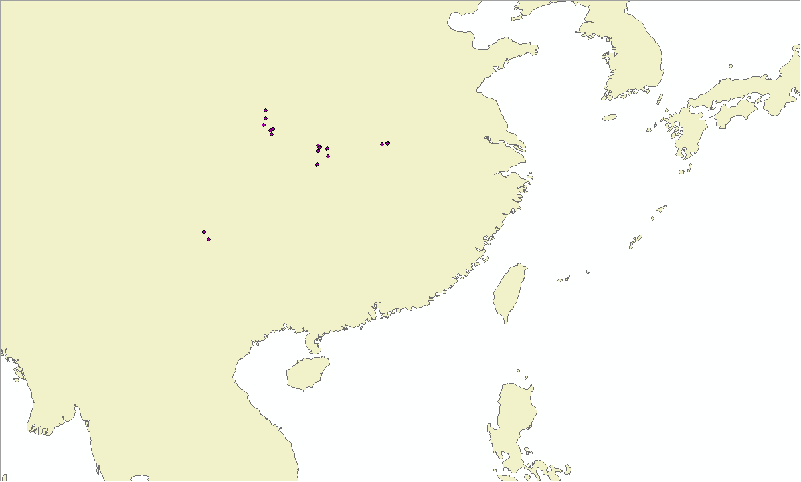

Generate N(s) from occurrences
In this section, we show how to generate a N via a text file with occurrence points. Fist, you need to prepare a text file with the format in Fig.1, and an opened BC in NicheA. We used the BC generated in the previous section. The menu of the function is in Fig.2. In the dialog (Fig.3), we select the prepared file, and a folder to save the result. When NicheA finishes this job, we can open it as a N (Fig.4). We also show the occurrence points in G space to compare the dataset in E and G space (Fig.5). In Fig.4, we can observe features of occurrence points in E space. In this case, we use the default colors to show the different feathers, which the occurrence points are in red, the convex polyhedron (CP) is in white, and the MVE is in yellow. In Fig.4, it is hard to observe the CP and occurrence points, because of MVE. We can use the submenus under "Control" menu to control the visibility of the features (Fig.6). Fig.7 shows the scenario when we hide MVE. We can see the CP and occurrence points clearly. You can also try the other submenus under "Control" menu.
Note:

